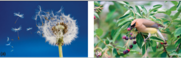

Sexual Reproduction in Seed Plants
Callout
Seed Function and Structure
A seed has two main functions:
- to protect and nourish the enclosed embryo,
- to carry the embryo to a new location.
Seeds, and in the case of angiosperms, the fruits that contain them, have a wide range of structures and mechanisms to help them disperse.
Seeds, and in the case of angiosperms, the fruits that contain them, have a wide range of structures and mechanisms to help them disperse. The ability of plant seeds to travel to a new location is crucial to introducing a species to a new area during succession. It is also important once a plant has established itself. Dispersal can move a plant’s seeds to a location where there is less competition from other plants for resources, which increases the seeds’ chances of survival.

Seeds are dispersed primarily by wind and animals. (a) Dandelion seeds have special
structures that allow them to be carried long distances by wind. (b) The nutrient-rich tissues of some seed-containing fruits, such as serviceberries, attract mammals and birds, which carry them away from the parent plant. If the seeds then fall on fertile ground, they can grow.
Figure 3 shows examples of the general structures in monocot and eudicot seeds. The seeds of these plant groups contain an embryo, nutritive tissue to support embryo growth, and a protective seed coat. In angiosperms, the nutritive tissue may be supplied either by cotyledons or by a specialized nutritive layer called the endosperm. The seeds of angiosperms are contained in fruits, but gymnosperm seeds are not.
Costs and Benefits of Sexual Reproduction
Unlike asexual reproduction, sexual reproduction involves the union of two haploid cells. Sexual reproduction requires structures and cells that are devoted entirely to this process. A plant must devote a lot of resources to sexual reproduction, so when resources are scarce, carrying out sexual reproduction can lower the chances that an individual organism will survive.
Callout
The potential costs of sexual reproduction are outweighed by its advantages.
- Populations produced by sexual reproduction have a high level of genetic diversity. If the environmental conditions change, there is a higher chance that some individuals in a genetically diverse population will have traits that are suited to that environment and will survive and reproduce.
The potential costs of sexual reproduction are outweighed by its advantages.
2. The products of sexual reproduction are seeds. Seeds can be dispersed away from the parent plant, and so the seedlings may have less competition for resources or better growing conditions.
3. Seeds can remain dormant for long periods and then germinate when conditions are favourable, increasing the chance of survival.
Many plants can readily reproduce both sexually and asexually. For example, a potato plant produces numerous tubers from which genetically identical plants can arise. It also produces seeds by sexual reproduction. ese are found in fruits that resemble small green tomatoes (Figure 4).
Sexual Reproduction in Gymnosperms
Cone-bearing gymnosperms, such as pines and cedars, provide us with most of the wood used in construction and paper products, as well as other useful products such as disinfectants and varnishes. e reproduction of gymnosperms therefore has great importance to our way of life. Conifers produce both male cones and female cones. Haploid cells called microspores are produced by meiosis within male cones. Each microspore develops into a pollen grain containing a male gametophyte. Meiosis in female cones produces megaspores that give rise to the egg-producing female gametophyes.
Callout
Pollination and Fertilization
Pollination is the process of transferring pollen grains to an ovule. All gymnosperm pollination takes place by wind. The surface and structure of pollen grains help them to be carried by wind (Figure 5).

Sexual Reproduction in Angiosperm
The products of sexual reproduction in angiosperms are seeds contained inside a fruit, which is a mature or ripened ovary. These seeds and fruit are important to many organisms, since they contain energy and nutrients. For example, squirrels and many birds depend on angiosperm seeds to get through the winter months. Much of the human diet comes from angiosperm seeds and fruits.
Flowers are the key organs in sexual reproduction of angiosperms. Figure 7 shows the generalized structure of a flower. The stamens make up the male reproductive flower parts. A stamen is composed of an anther and a filament. The anther produces pollen grains. The filament raises the anther above the female organs. The carpel includes the female reproductive parts. The stigma is a sticky surface that acts as a landing site for pollen grains. Below the stigma is the style, a tube-like structure that leads down to the ovary. The ovary contains one or more ovules, each of which forms a seed when it is fertilized.

There are distinct differences between monocot and eudicot flowers (Figure 8). The petals and stamens of monocot flowers are always in multiples of three. In eudicot flowers, petals and stamens are in multiples of four or five.
Pollination and Fertilization

In angiosperms, pollination happens by wind or by animals, depending on the species. Animals that transfer pollen from one plant to another are called pollinators. Most pollinators are insects, such as bees, but other species can also be pollinators (Figure 11).
Fruit Formation
A fruit is a mature ovary. Fruit development starts when an ovule is fertilized during double fertilization. The ovary wall develops into the fruit wall, called the pericarp. The pericarp may be fleshy or dry. A fruit helps to protect and disperse the seed, but the fruit does not provide nutrients to the developing embryo. Commonly, the word “fruit” is used for sweet, fleshy fruits, such as plums or strawberries, while “nut” and “grain” are used for dry fruits, such as walnuts or wheat. Fruits that are less sweet, such as peppers, squash, tomatoes, and peas, are usually called “vegetables” in everyday speech. However, the correct scientific term for any structure that is formed from a ripened ovary is “fruit”
- Seeds are the product of sexual reproduction; they, along with fruits, provide a dispersal mechanism and protect the embryo within them.
- Seeds are produced when haploid male sex cells in pollen unite with haploid female sex cells in an ovule.
- In gymnosperms, the pollen is produced in smaller male cones, and pollination and fertilization occur in the ovules contained in larger female cones.
- In angiosperms, the main reproductive structure is the flower. Pollen isproduced by anthers on the stamen. The carpel contains the stigma and thes tyle, which leads down to the ovary. The ovary contains one or more ovules,which form seeds after pollination and double fertilization.
- Angiosperm seeds are produced within a fruit, which is a ripened ovary.
- Seeds are an important food source for many organisms, including humans.
- Human culture was advanced by understanding and using seeds.
- Traditional methods of producing angiosperm fruit by monoculture are not sustainable. However, methods that are more sustainable continue to be developed.